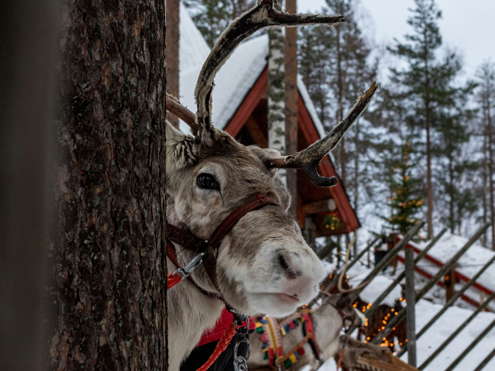

Santa is receiving a wish letter from a boy when visiting a small town.
Santa's official online mailbox
Have you sent your christmas wishes to Santa Claus? If not, you can easily do this by going to the Letter page and Send one directly to his office in the North Pole. Christmas wishes sent from this page comes directly to one of the managing elves, who then process your letter before handing it over to Santa Claus him self.
You can also get to know some of the managing elves by going to the About us page to see a image, name and job title.
North Pole is the main office and workshop where Santa Claus and the elves are working and live in. Works under the magic from all the children (and adults) that believe in us. We have multiple production lines where we produce, assemble and wrapping all the presents in nice christmas wrapping paper.
One of Santa's many reindeers
